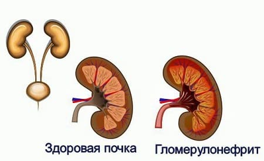

Стрептококковая ангина — это инфекционное заболевание горла, вызванное разновидностью бактерий, которую называют стрептококком группы А. Существует множество видов стрептококков, но именно этот вызывает скарлатину. Это самая распространенная бактериальная инфекция горла, и она чаще всего встречается у детей в возрасте от 5 до 15 лет, в основном у дошкольников. Дети инфицируются стрептококками от других людей, как правило, через слюну или носовую слизь. Вирус легко распространяется в тех местах, где люди тесно контактируют друг с другом: например, в детском саду или в классе. Даже две крошечные капельки жидкости, вылетевшие из носовых проходов при чихании или кашле, могут легко распространять стрептококки. Пожатие рук с инфицированным человеком является еще одним часто встречающимся способом распространения стрептококков.
СИМПТОМЫ
Иногда бывает трудно отличить скарлатину от других инфекций горла. Большинство воспалений горла вызываются вирусными инфекциями и не поддаются лечению антибиотиками. Только ваш врач может наверняка сказать, действительно ли у вашего ребенка стрептококковая ангина.
При стрептококковой ангине у детей могут быть все или некоторые из нижеперечисленных симптомов:
Симптомы появляются через 2— 5 дней после контакта с инфекцией, это более короткий инкубационный период, чем у большинства вирусов, и зачастую это заболевание начинается очень резко, причем, как правило, лихорадка является первым симптомом. Как вы можете понять по длинному списку симптомов, диагностика скарлатины иногда может быть затруднительна. Усложняет ее то, что выраженность симптомов может сильно варьировать, у некоторых людей они могут проявляться очень легко или почти отсутствовать, в то время как у других будут очень яркими.
ЧТО ДЕЛАТЬ
Если вы подозреваете у своего ребенка скарлатину или если он тесно контактировал с больным этим заболеванием, немедленно отправляйтесь к врачу. Пока врач не осмотрит вашего ребенка, вы должны, насколько это возможно, исключить его контакты с другими детьми. Педиатр расспросит вас и осмотрит горло вашего ребенка.
СОВЕТ ДОКТОРОВ СИРС: ЗАКОНЧИТЕ КУРС! ОЧЕНЬ важно провести полный курс лечения антибиотиками. Когда лечение прекращено слишком рано, даже если ваш ребенок чувствует себя лучше, стрептококковая ангина может вернуться. |
Иногда внешний вид горла явно указывает на скарлатину. Экспресс-анализ на скарлатину может быть проведен в кабинете у врача: врач возьмет мазок из зева и протестирует образец. Это занимает примерно 5 минут и определяет наличие стрептококковой инфекции с вероятностью 95%. Однако иногда этот экспресс-тест может не определить случаи настоящей скарлатины. Если результат экспресс-теста отрицательный, будет проведен анализ путем выращивания бактерий из горла. Для этого из зева берут еще один мазок и помещают содержимое мазка в специальную среду, в которой стрептококки, если они есть, хорошо растут. На этот анализ необходимо 48 часов, и он считается наиболее точным. Отсутствие стрептококков может полностью исключить скарлатину в качестве причины симптомов вашего ребенка.
ЛЕЧЕНИЕ
Если подозрение на скарлатину подтвердилось, следует начать лечение антибиотиками, даже если ваш ребенок чувствует себя лучше. Воспаление горла, вызванное стрептококковой инфекцией, пройдет само по себе, тем не менее лечение антибиотиками необходимо, поскольку:
Поскольку все больше и больше бактерий становятся устойчивыми к антибиотикам, иногда стрептококковая ангина не реагирует на обычные легкие антибиотики. Если в течение 2—3 дней у ребенка не наблюдается улучшения, свяжитесь со своим педиатром. Помимо правильного приема антибиотиков нижеперечисленные средства могут помочь вылечить скарлатину:
СОВЕТ ДОКТОРОВ СИРС: ПОЛЕГЧЕ С ВОСПАЛЕННЫМ ГОРЛОМ Избегайте кислых жидкостей, когда у вашего ребенка стрептококковая ангина. К таким жидкостям относятся апельсиновый сок, лимонад, грейпфрутовый сок и другие. Эти напитки могут усилить раздражение горла. |
Не пускайте ребенка в школу, если у него сохраняется лихорадка или он все еще является источником инфекции. В разных школах разные правила касательно того, принимают ли они детей через 24 или 48 часов после начала лечения скарлатины. Узнайте у школьной администрации правила школы. Свяжитесь с врачом, если симптомы у вашего ребенка не улучшились в течение 2—3 дней с момента начала лечения.
ОСЛОЖНЕНИЯ НЕЛЕЧЕННОЙ СТРЕПТОКОККОВОЙ АНГИНЫ
Ниже перечислены осложнения, которые могут развиться, если не лечить стрептококковую ангину.
Абсцесс. В редких случаях инфекция может распространиться на окружающие ткани и вызвать обширное гнойное воспаление в шее, которое называется перитонзиллярным абсцессом. Большая опухоль будет видна сбоку шеи, и ребенку может быть сложно глотать или даже дышать. В этом случае необходимо немедленно обратиться к врачу или в отделение неотложной помощи и обеспечить внутривенное введение антибиотиков.
Ревматизм. В очень редких случаях стрептококки могут проникнуть в кровоток и попасть в сердце, где они прикрепятся к одному из клапанов сердца. Бактерии могут сформировать небольшой очаг инфекции на клапане, который будет мешать работе сердца. К симптомам относятся боль в груди и одышка наряду с устойчивым повышением температуры тела. Если эти признаки наблюдаются при установленной стрептококковой инфекции, необходимо немедленно обратиться в отделение неотложной помощи. Лечение включает интенсивную терапию с введением антибиотиков.

Гломерулонефрит. Это сложное слово означает воспаление почек. На самом деле в почках нет стрептококков. Скорее это осложнение развивается, когда иммунная система вырабатывает антитела для борьбы со стрептококковой инфекцией, но антитела непреднамеренно атакуют также и почки, из-за чего они временно перестают нормально работать. Признаком этого осложнения является кровь в моче (красная или краснокоричневая моча), и может потребоваться госпитализация.
Скарлатина. На самом деле не является осложнением стрептококковой ангины. Это просто иммунная реакция аллергического типа на бактерию, что приводит к появлению красной, папулезной, шершавой на ощупь сыпи по всему телу. Скарлатина в действительности не более опасна, чем обычная стрептококковая ангина, хотя ребенок может чувствовать себя хуже. Эта сыпь не лечится никаким другим методом, помимо лечения антибиотиками от стрептококковой инфекции.
ПРОФИЛАКТИКА
Прививание ребенку гигиенических навыков является важным моментом в предотвращении стрептококковой ангины. Хорошо помогает частое мытье рук, особенно если известно о вспышке стрептококковой инфекции в школе. Скажите своему ребенку прикрывать рот, когда он кашляет или чихает, и после этого мыть руки. Если у вашего ребенка стрептококковая ангина, держите посуду, из которой он ест, и его зубную щетку отдельно от остальных. Если ваши дети часто болеют стрептококковой ангиной, кто-то из них может быть носителем стрептококковой инфекции. У носителя во рту живут стрептококки, но у него не наблюдается симптомов. Носители могут передавать бактерии окружающим. Лечение носителей с помощью антибиотиков может удалить бактерии из их рта и поможет прервать круговорот повторных заражений. Иногда, в случае, если стрептококковые ангины повторяются у детей из года в год, возможно, потребуется удаление миндалин.
СОВЕТ ДОКТОРОВ СИРС: ВЫБРОСЬТЕ ЗУБНУЮ ЩЕТКУ Если у вашего ребенка стрептококковая ангина, купите новую зубную щетку, и пусть ребенок начнет чистить ею зубы через два дня после начала приема антибиотиков. Если используется та же самая щетка, бактерии могут остаться на ее щетине и привести к повторному заражению после окончания курса антибиотиков. |
Здоровье ребенка от докторов Сирс / Сирс У. и др.